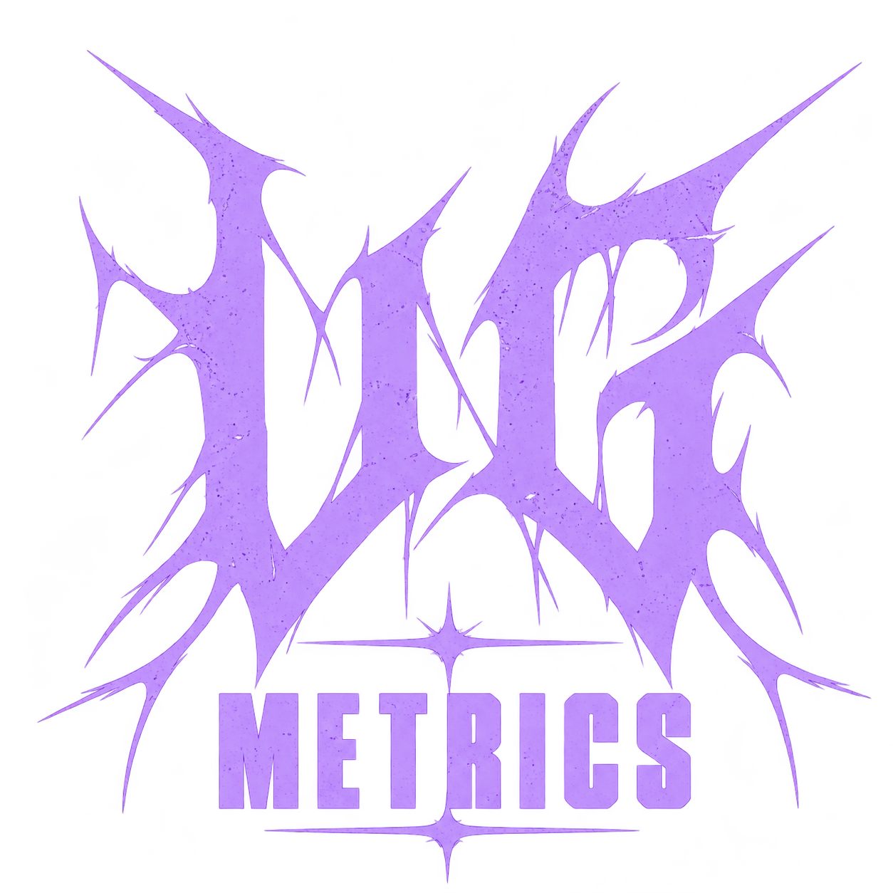

Lavender logo
1254 × 1254 / transparent PNG
Download PNG ↓The thorned lettermark in three forms: lavender for the brand, cream for a one-color treatment, and a circular profile avatar.

1254 × 1254 / transparent PNG
Download PNG ↓
1254 × 1254 / transparent PNG
Download PNG ↓1254 × 1254 / transparent PNG
Download PNG ↓The sound. The credits. The business.
Raster logo assets. Vector and print separation files are not included.